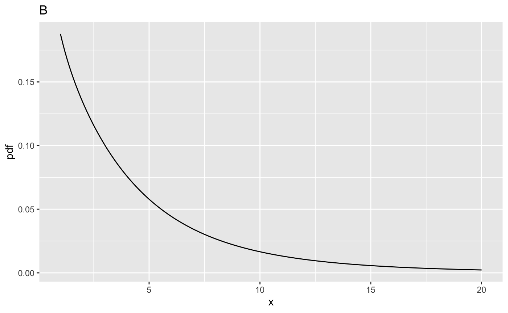
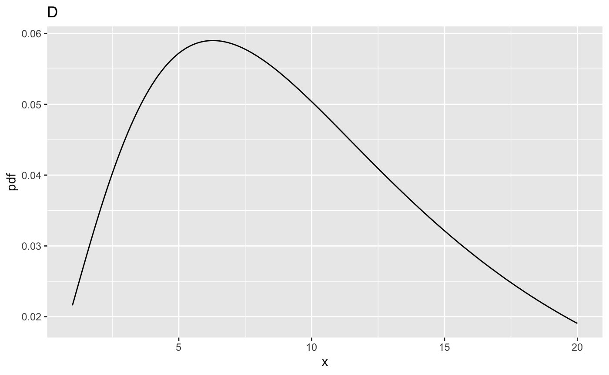

Chapter 11, Vignette 1: Background on the F distribution
Dev P. Chakraborty
2018-11-22
SampleSizeCh11V1.RmdIllustrating the F-distribution
ndf <- 1;ddf <- 10;ncp <- c(0,2,5,10)
fCrit <- qf(0.95, ndf,ddf)
cat("critical value of x for rejecting NH is ", fCrit,"\n")
#> critical value of x for rejecting NH is 4.964603
x <- seq(1, 20, 0.1)
myLabel <- c("A", "B", "C", "D")
myLabelIndx <- 1
for (i in 1:length(ncp))
{
y <- df(x,ndf,ddf,ncp=ncp[i])
cat("ndf = ", ndf, ", ddf = ", ddf, ", ncp = ", ncp[i], ", prob > fCrit = ",
1-pf(fCrit, ndf, ddf, ncp = ncp[i]), "\n")
curveData <- data.frame(x = x, pdf = y)
curvePlot <- ggplot(data = curveData, mapping = aes(x = x, y = pdf)) +
geom_line() +
ggtitle(myLabel[myLabelIndx]);myLabelIndx <- myLabelIndx + 1
print(curvePlot)
}
#> ndf = 1 , ddf = 10 , ncp = 0 , prob > fCrit = 0.05
#> ndf = 1 , ddf = 10 , ncp = 2 , prob > fCrit = 0.2490518
#> ndf = 1 , ddf = 10 , ncp = 5 , prob > fCrit = 0.5238753
#> ndf = 1 , ddf = 10 , ncp = 10 , prob > fCrit = 0.8128068
Comments
ncp = 0, which yields the usual (aka central) F-distribution that was used in the previous two chapters (9 and 10). The integral under this distribution is unity (this is true for all plots above). The critical value,fCritin the code, is that value ofxsuch that the probability of exceedingxis \(\alpha\); in the current examplefCrit= 4.9646027. Notice the use of the quantile functionqf()to determine this value, also that the default value ofncp, namely zero, is used; specifically, one does not pass a 4th argument toqf(). The decision rule for rejecting the NH uses the NH distribution of the F-statistic, i.e., reject the NH if F >=fCrit. As expected,prob > fCrit= 0.05 because this is howfCritwas defined.ncp = 2. It is noticeably shifted to the right as compared to A, thereby making it more likely that the observed value of the F-statistic will exceed the critical value determined for the NH distribution. In fact,prob > fCrit= 0.2490518, which is the statistical power.ncp = 5, and nowprob > fCrit= 0.5238753.ncp = 10, and nowprob > fCritis 0.8128068. The effect of the shift is obvious in plots (C) and (D). Considering a vertical line atx = 4.10, most of the distribution in plot (D), more than 0.8128068, to be precise, lies to the right of this line, so the NH is more than 0.8128068 likely to be rejected. Of course, what causes the shift is the increased value of the non-centrality parameter. The larger that non-centrality parameter, the greater the shift to the right.